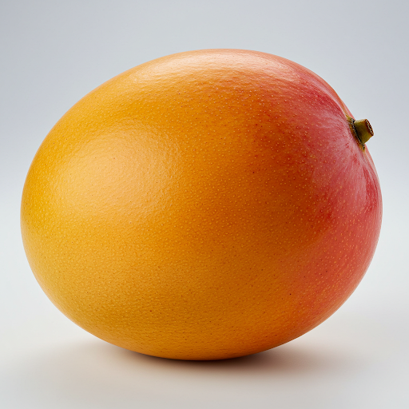

Sobre a Manga
A manga (Mangifera indica) é uma fruta tropical deliciosa e nutritiva, originária da Índia. Ela é apreciada em todo o mundo por seu sabor doce e suculento, além de ser rica em vitaminas, minerais e antioxidantes. A manga pode ser consumida in natura, em sucos, sorvetes, doces e geleias.
Como Plantar Manga
O plantio da manga pode ser feito a partir de sementes ou mudas. A muda garante um crescimento mais rápido e uma produção de frutos mais precoce, mas a semente também pode ser utilizada, com um pouco mais de paciência. O solo deve ser fértil, bem drenado e com boa exposição solar.
Passo a passo:
- Escolha um local com boa incidência de luz solar (pelo menos 6 horas por dia).
- Prepare o solo, cavando um buraco com cerca de 50 cm de profundidade e largura.
- Coloque a muda ou semente no buraco, cubra com terra e regue bem.
- Mantenha o solo úmido nos primeiros meses, mas sem encharcar.
- Faça adubações regulares para garantir o bom desenvolvimento da planta.
Cuidados com a Mangueira
A mangueira precisa de alguns cuidados especiais para crescer forte e saudável, produzindo frutos de qualidade:
- **Irrigação:** Regue regularmente, principalmente nos primeiros anos e durante a floração e frutificação.
- **Poda:** Faça podas de formação e limpeza para manter a planta com um formato adequado e remover galhos secos ou doentes.
- **Adubação:** Utilize adubos específicos para mangueiras, seguindo as recomendações do fabricante.
- **Controle de pragas e doenças:** Monitore a planta e utilize produtos adequados para controlar pragas como pulgões, cochonilhas e moscas-das-frutas, e doenças como a antracnose.
Colheita da Manga
A manga geralmente está pronta para a colheita quando a casca começa a mudar de cor e o fruto fica levemente macio. O tempo para a colheita varia de acordo com a variedade da manga e as condições climáticas, mas geralmente ocorre de 3 a 6 meses após a floração.